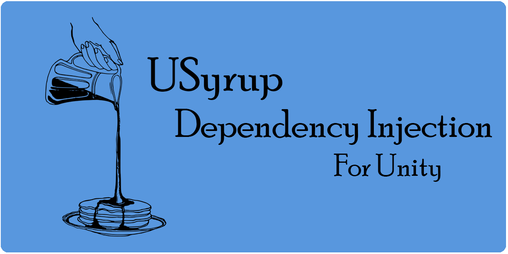

USyrup - A Dependency Injection Framework for Unity

USyrup is a runtime dependency injection framework for the Unity Game Engine. If you want to learn more, checkout the README.
USyrup is a runtime dependency injection framework for the Unity Game Engine. If you want to learn more, checkout the README.